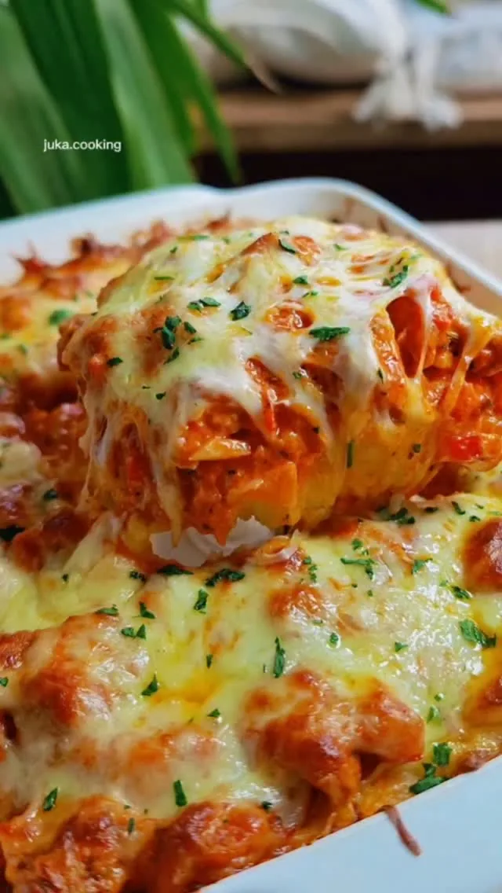

Cremiger Kartoffel-Hähnchen-Auflauf
Cremiges Kartoffelpüree, würziges Hähnchen in Sahnesoße und eine goldbraune Käsekruste – einfach himmlisch!
- 16 Zutaten
- 3 Schritte
Zur Zubereitung Video ansehen ↗
Zutaten
- Für die Hähnchenfüllung
- Zum Überbacken
Zubereitung
- Kartoffeln kochen, mit Butter, Käse und Salz zu Püree stampfen und in eine Auflaufform geben.
- Hähnchen mit Zwiebeln, Paprika und Knoblauch anbraten. Tomatenmark, Paprikamark und Gewürze dazugeben. Kochsahne unterrühren und kurz köcheln lassen.
- Die Hähnchenmischung auf dem Kartoffelpüree verteilen, mit Käse bestreuen und bei 200 °C goldbraun überbacken.